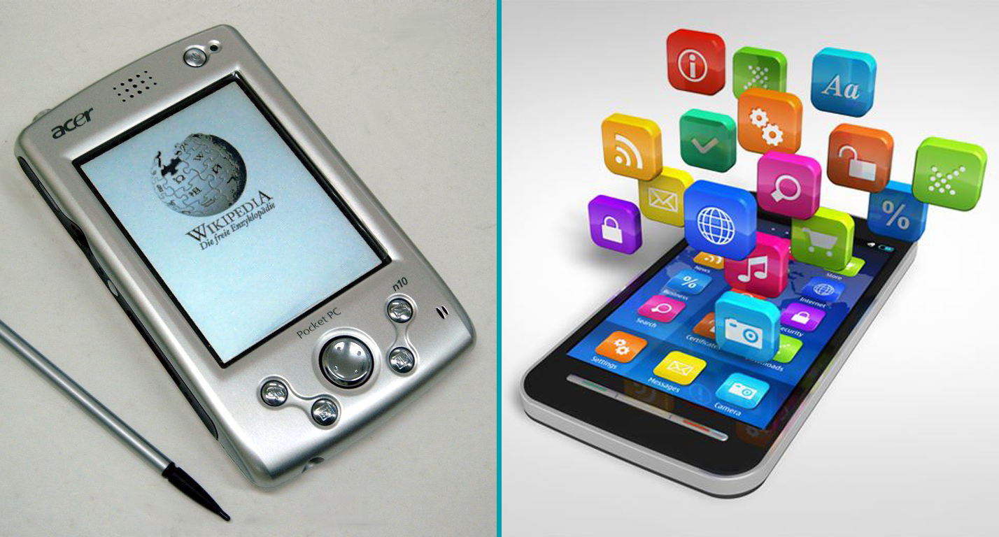
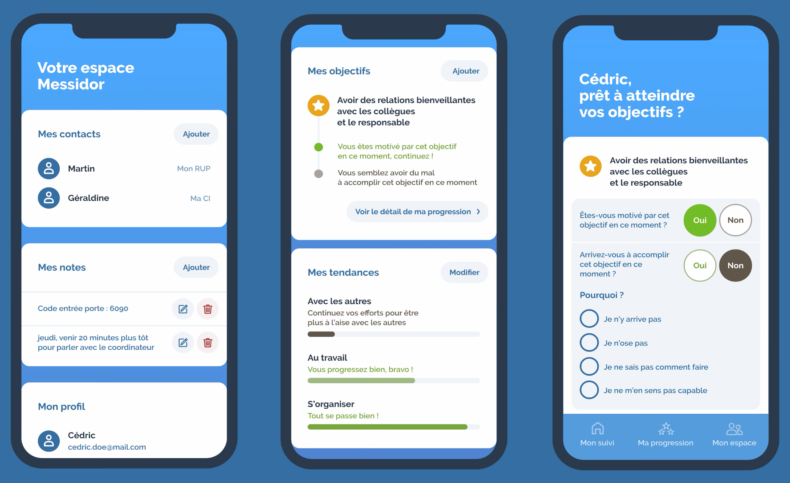

Le Handicap psychiqueLes solutions compensant le handicap psychique

Assistants cognitifs numériques
Les assistants cognitifs numériques (ACN) Peuvent constituer une solution de traitement thérapique pour aider une personne
atteinte d'un handicap psychique.
Il y a quelques années, ils existaient sous forme d'un ordinateur de poche où d'un téléphone intelligent, aujourd'hui souvent sous forme d'application pour smartphone
et permettent à des personnes atteintes de schizophrénie par exemple d'utiliser des logiciels d'assistance cognitive, sous différentes
formes; des aides mnésiques, des systèmes de planifications etc. en bref, tout ce qui peut permettre la réalisation de tâches du quotidien plus simples offrant une
assistance à la personne handicapée.
Ces méthodes procurent ainsi certains effets positifs comme l'autonomie, l’assurance et l’insertion sociale.
Les ACN fonctionnent par le biais d'une méthode de traitement qui s'appelle la remédiation cognitive.
Remédiation cognitive : modalité de traitement rééducative qui repose sur l’utilisation d’activités (souvent ludiques)
et qui se fonde sur l’idée que l’entraînement des fonctions cognitives sollicite la neuroplasticité ( on parle de prothèses ou orthèses cognitives).
La remédiation cognitive se fait en complément d’autres traitements (psychothérapie par exemple) et ne les remplace pas.
Les exercices doivent être motivants, revalorisants et individualisés.
Assistants applicatifs
Avec la démocratisation du smartphone tactile depuis les années 2007, certaines solutions de soutien au handicap psychique nécessitant jusqu'alors un
appareil lui étant dédié ont pu être "migrées" en quelque sorte vers cette nouvelle plate-forme qu'est le smartphone.
En effet, énormément de monde aujourd'hui possède un téléphone portable et il est d'autant plus simple d'installer soi-même une application dessus.
C'est pourquoi certaines applications de soutien aux handicaps psychiques ont fait leur apparition, comme par exemple l'application Verry Appli.
Verry Appli est une application de Messidor (une association qui permet l'insertion professionnelle des personnes
souffrant de troubles psychiques en leur proposant un vrai travail rémunéré par le biais d'un parcours de transition).
Cette application a justement pour but de faire le lien de transition vers l'emploi, en permettant la progression de l'utilisateurs dans certains objectifs personnalisés
grâce à plusieurs fonctionnalités :
Inscription des objectifs donnés par les encadrants et suivi du ressenti
Définition des domaines de progression (estime de soi, motivation, état mental etc.)
Mise en place d'un bilan de sa progression
Possibilité d'envoyer une "alerte conseil" pour pouvoir avoir quelqu'un à son écoute dans des moments difficiles
Elle constitue donc un outil d'accompagnement important pour les personnes atteintes de handicap psychique en les suivant tout au long de leur parcours de transition, leur permettant
de gagner en autonomie et en confiance en soi.

Assistants robotiques
Aujourd'hui, de plus en plus de solutions d'accompagnement des personnes comportant un handicap psychique ou des maladies entraînant des troubles mentaux ou comportementaux
se trouvent dans la robotique.
En effet, certains robots sont conçus spécialement pour soutenir mentalement les personnes comportant ces handicaps, comme par exemple
le robot PARO, qui aide psychologiquement les personnes agées atteintes d'alzheimer.
PARO est un robot émotionnel d’assistance thérapeutique ayant fait l’objet de 10 années de recherche et développement au Japon, appuyées par de nombreuses études
de validation clinique.
Le robot PARO vise à offrir aux professionnels de santé un outil simple d’utilisation et de haute technologie permettant de véhiculer les
bénéfices de la thérapie animalière auprès de personnes atteintes de troubles du comportement et de la communication (Malades Alzheimer et troubles apparentés),
ou bien de déficiences motrices et sensorielles, en procurant à ces personnes une amélioration de leur bien-être et de leur qualité de vie dans un cadre
non médicamenteux.